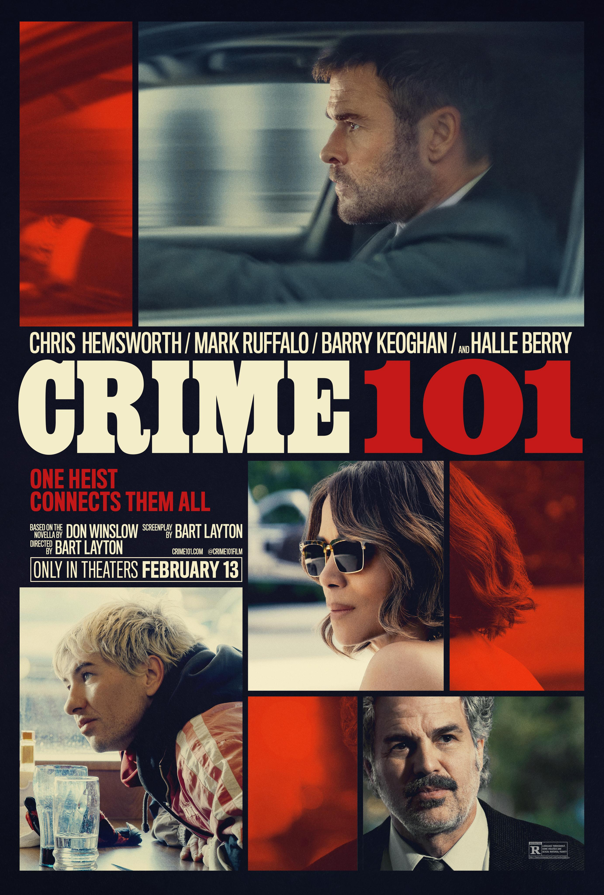

Crime 101 is a tense, stylish crime thriller that focuses on a high-stakes cat-and-mouse story in the world of professional heists and organized crime. The film stands out for its gritty atmosphere, strong pacing, and a grounded tone that keeps the tension steady throughout. It leans more toward mood and suspense than flashy action, which gives it a more realistic edge compared to typical crime blockbusters. However, the story can feel a bit familiar at times, following genre beats without many big surprises. Some characters are interesting but not deeply explored, and a few emotional moments don’t fully land because the film stays focused on plot momentum. Overall, it’s a solid and engaging crime thriller—well-made and suspenseful, even if it doesn’t break new ground in the genre.
